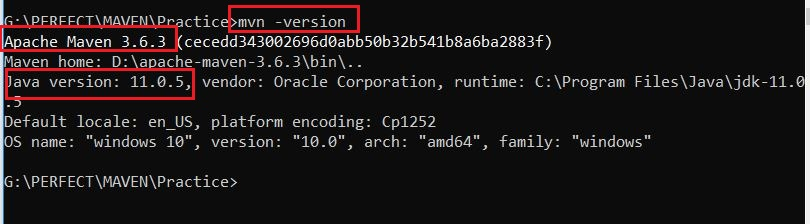
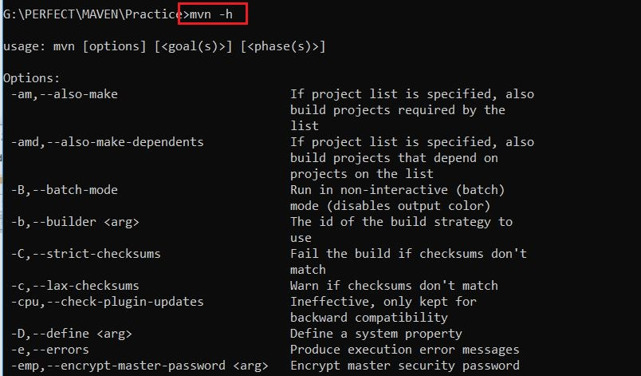
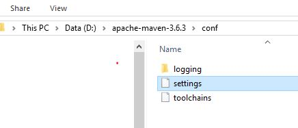
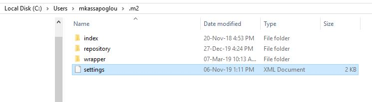
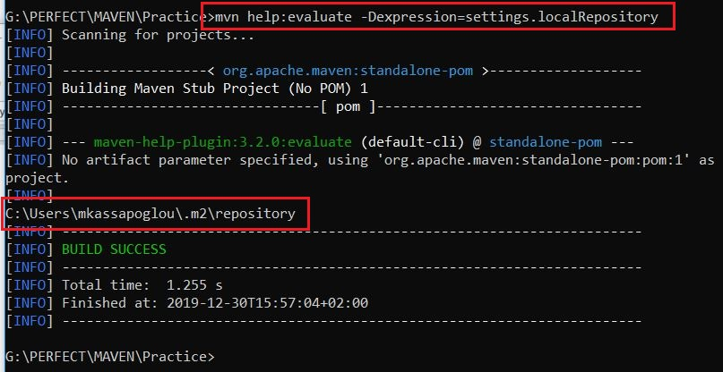
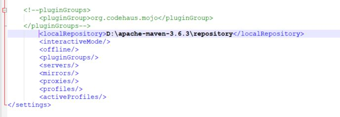

ΔΩΡΕΑΝ ΜΑΘΗΜΑΤΑ APACHE MAVEN
Στην σημερινή δωρεάν ενότητα Apache Maven, θα δούμε που ακριβώς
αποθηκεύονται όλες οι ρυθμίσεις του, τι σημαίνουν και πότε
μπορούμε να τις χρησιμοποιήσουμε, πως μπορούμε να λάβουμε βοήθεια
για τις εντολές του Apache Maven από το command prompt, και πως
μπορούμε να βελτιώσουμε την απόδοση του ίδιου του Apache Maven
όταν χτίζουμε μεγάλα Java projects. Έχουμε πολλά θέματα να
αναλύσουμε οπότε ας ξεκινήσουμε την θεωρία μας.
Όπως έχουμε ήδη δει στην ΕΝΟΤΗΤΑ 1
(https://kassapoglou.github.io/maven/learning-maven-unit1.html) ,
για να ελέγξουμε την σωστή λειτουργία του Maven όπως και την έκδοση
της Java που χρησιμοποιεί εκτελούμε την εντολή mvn -version.

Εάν θέλαμε να βρούμε όλες τις διαθέσιμες εντολές που μπορούμε
να εκτελέσουμε από το command prompt δεν έχουμε παρά να εκτελέσουμε
την εντολή mvn -h ή mvn -help. Η συγκεκριμένη εντολή, όταν εκτελεστεί,
θα μας παρουσιάσει μια λίστα με όλες τις επιλογές που μπορούμε να
προσθέσουμε μετά το mvn. Αν πάτε προς το τέλος της λίστας, θα δείτε
μάλιστα ότι η εντολή mvn -version είναι μια από τις διαθέσιμες επιλογές.

Τα βήματα εγκατάστασης του Apache Maven που έχουμε ακολουθήσει μέχρι αυτή
την στιγμή, είναι αρκετά για να μπορέσουμε να χτίσουμε Maven projects
και να προχωρήσουμε στην θεωρία μας. Όμως σε επιχειρήσεις όπου τα projects
είναι αρκετά μεγάλα σε μέγεθος κώδικα αλλά και με μεγαλύτερες απαιτήσεις
σε ασφάλεια, ίσως υπάρχει ανάγκη παροχής επιπρόσθετων ρυθμίσεων.
Που βρίσκονται όμως αυτές οι έξτρα ρυθμίσεις και πως ονομάζονται?
Υπάρχουν δύο ειδών τοποθεσίες που μπορούμε να βρούμε τις ίδιες ρυθμίσεις:
-
η πρώτη είναι στο αρχείο settings.xml το οποίο βρίσκεται
μέσα στο conf φάκελο της εγκατάστασης του Maven.
Αυτές οι ρυθμίσεις εφαρμόζονται σε όλα τα maven projects για όλους τους χρήστες και για αυτό θεωρούνται global.

-
Και η δεύτερη είναι πάλι σε ένα αρχείο με το όνομα settings.xml
αλλά μέσα στο φάκελο .m2 του user directory.
Αυτές οι ρυθμίσεις είναι προσωπικές για τον συγκεκριμένο χρήστη για αυτό και ονομάζονται user settings.

Το Maven λοιπόν θα ψάξει και στις δύο αυτές τοποθεσίες
για να βρει το αρχείο settings.xml.
Αν υπάρχουν και τα δύο αρχεία και to καθένα περιέχει διαφορετική
ρύθμιση για κάποια επιλογή του προφίλ του Maven,
θα υπερισχύσει το settings.xml αρχείο του χρήστη, δηλαδή εκείνο που βρίσκεται στο .m2 φάκελο.
Θα έχετε ήδη παρατηρήσει ότι εκτός από το αρχείο
settings.xml μέσα στο φάκελο .m2 υπάρχουν και άλλοι φάκελοι
όπως π.χ ο repository που περιέχει όλες τις βιβλιοθήκες τις
οποίες χρειάζονται τα project μας. Θα αναφερθούμε σε αυτό το
φάκελο σε μελλοντική ενότητα οπότε θα δεν προχωρήσουμε να μιλήσουμε
για τα Jar αρχεία που περιέχει. Αυτό όμως που μας ενδιαφέρει είναι να
γνωρίζουμε την τοποθεσία του έτσι ώστε μπορούμε να βρούμε τις βιβλιοθήκες
αλλά και το settings.xml αρχείο αν και εφόσον θέλουμε να το αλλάξουμε.
Για να βρούμε λοιπόν το που βρίσκεται το .m2/repository directory
δεν έχουμε παρά να τρέξουμε την εντολή:
mvn help:evaluate -Dexpression=settings.localRepository

Προσέξτε πριν από το help δεν υπάρχει παύλα (-).
Θα μιλήσουμε αργότερα επίσης και το τι σημαίνει η άνω κάτω τελεία ( : )
και γιατί βάζουμε δύο εντολές μαζί. Για τώρα, συγκεντρωθείτε μόνο στο γεγονός
ότι ψάχνουμε να βρούμε το settings.xml αρχείο σε δύο τοποθεσίες.
Παρεμπιπτόντως, αν έχετε προσπαθήσει να βρείτε το .m2 φάκελο και δεν
τον βρήκατε, είναι επειδή χρειάζεται να τρέξετε μια οποιαδήποτε
maven εντολή πρώτα για να δημιουργηθεί.
Τώρα, ας ανοίξουμε το settings.xml αρχείο από
την τοποθεσία .m2 να δούμε τι περιέχει μέσα.
Θα ήταν καλύτερα όταν διαχειρίζεστε τέτοιου είδους αρχεία να
χρησιμοποιείται έναν editor όπως notepad++.
settings.xml
<?xml version="1.0" encoding="UTF-8"?>
<!--
Licensed to the Apache Software Foundation (ASF) under one
or more contributor license agreements. See the NOTICE file
distributed with this work for additional information
regarding copyright ownership. The ASF licenses this file
to you under the Apache License, Version 2.0 (the
"License"); you may not use this file except in compliance
with the License. You may obtain a copy of the License at
http://www.apache.org/licenses/LICENSE-2.0
Unless required by applicable law or agreed to in writing,
software distributed under the License is distributed on an
"AS IS" BASIS, WITHOUT WARRANTIES OR CONDITIONS OF ANY
KIND, either express or implied. See the License for the
specific language governing permissions and limitations
under the License.
-->
<!--
User-specific configuration for maven. Includes things that should not
be distributed with the pom.xml file, such as developer identity, along with
local settings, like proxy information. The default location for the
settings file is ~/.m2/settings.xml
-->
<settings xmlns="http://maven.apache.org/SETTINGS/1.0.0" xmlns:xsi="http://www.w3.org/2001/XMLSchema-instance"
xsi:schemaLocation="http://maven.apache.org/SETTINGS/1.0.0 http://maven.apache.org/xsd/settings-1.0.0.xsd">
<!--proxies>
<proxy>
<host>my.proxy.host</host>
</proxy>
</proxies-->
<!--pluginGroups>
<pluginGroup>org.codehaus.mojo</pluginGroup>
</pluginGroups-->
<localRepository/>
<interactiveMode/>
<offline/>
<pluginGroups/>
<servers/>
<mirrors/>
<proxies/>
<profiles/>
<activeProfiles/>
</settings>
Στην ουσία έχουμε τις εξής παραμέτρους που μπορούμε να τροποποιήσουμε
-
localRepository : Αυτή είναι η τοποθεσία στην οποία δημιουργείται
ο repository φάκελος ο οποίος περιέχει όλες
τις βιβλιοθήκες που χρειάζονται τα project μας. Με βάση το
παράδειγμα, θα μπορούσαμε να ορίσουμε μια καινούργια τοποθεσία.
Στο δικό μου settings.xml, ορίζω αυτό το αρχείο να είναι μια
τοποθεσία διαφορετική από το C:\ drive. Ο λόγος που το κάνω αυτός είναι
βασικά πρακτικός. Ο φάκελος αυτός μπορεί να μεγαλώσει κατά πολύ σε μέγεθος
όταν κατεβάζουμε καινούργιες βιβλιοθήκες κάθε φορά.

-
InteractiveMode : Η προκαθορισμένη τιμή για αυτή την
μεταβλητή είναι true. Αυτό σημαίνει ότι όταν δημιουργούμε ένα καινούργιο
Maven Project μέσα από το command prompt το Maven θα μας ρωτήσει να
ορίσουμε κάποια ονόματα όπως το όνομα του project, το όνομα του πακέτου
κτλ. Αν ορίσουμε την τιμή να είναι false τότε το Maven θα χρησιμοποιήσει
τις δικές του προκαθορισμένες τιμές χωρίς να μας ρωτήσει.
-
offline : Όταν χρησιμοποιούμε το Maven για πρώτη φορά
σε ένα project, θα προσπαθήσει να κατεβάσει από το δίκτυο όλες τις βιβλιοθήκες
που χρειάζεται το project για να γίνει compile και να εκτελεστεί σωστά.
Αν τώρα θέσουμε αυτή την παράμετρο να είναι true, τότε από την επόμενη
φορά που θα κάνουμε build το project μας, το Maven δεν θα προσπαθήσει
να ενωθεί στο δίκτυο αλλά θα τρέξει σε offline mode. Αυτό σημαίνει ότι
θα χρησιμοποιήσει τις βιβλιοθήκες που ήδη έχει κατεβάσει και έχει αποθηκεύσει
στο repository φάκελο. Αυτό ίσως βολεύει μερικές φορές, αλλά αν υπάρχουν
αναβαθμίσεις στις βιβλιοθήκες που χρησιμοποιούμε δεν θα ενημερωθούμε για
αυτές. Για αυτό πρέπει να χρησιμοποιούμε το offline για συγκεκριμένους
λόγους και για μικρό χρονικό διάστημα.
-
servers : Το Maven έχει την δυνατότητα να ενώνεται με
πολλούς και διαφορετικής χρήσης servers όπως π.χ Git και Jenkins.
Με την παράμετρο servers μπορούμε να ορίσουμε το username και το
password που χρειάζεται το Maven για να ενωθεί με αυτούς τους servers.
Αυτό είναι μια πολύ συνηθισμένη πρακτική στον σημερινό κόσμο του
προγραμματισμού μιας και κυριαρχεί η έννοια του CI/CD όπου
ορίζουμε ένα production pipeline. Για αυτά θα μιλήσουμε αργότερα
οπότε μην σας απασχολούν τώρα.
-
mirrors : Πολλές φορές, για να επισπεύσουμε την
διαδικασία χτισίματος ενός project, αντί να κατεβάζουμε συνέχεια
τις βιβλιοθήκες από το Ίντερνετ, τις αντιγράφουμε τοπικά στο εταιρικό μας
δίκτυο και ορίζουμε στο Maven, μέσα από την παράμετρο mirrors, που
μπορεί να βρει το Maven αυτές τις βιβλιοθήκες στο τοπικό δίκτυο.
-
proxies : Αν και εφόσον υπάρχει proxy στην εταιρεία,
τότε μέσα από την παράμετρο proxies ορίζουμε όλες τις πληροφορίες
που είναι απαραίτητες έτσι ώστε το Maven να μπορεί να ενωθεί στο Ίντερνετ.
Πριν κλείσουμε την σημερινή ενότητα, θα ήθελα να αναφερθούμε
σε ένα κοινό φαινόμενο που παρατηρείται όταν χτίζουμε ένα πολύ μεγάλο java
project που απαιτεί πάρα πολλές εξωτερικές βιβλιοθήκες επιπλέον σε αυτές που
προσφέρει η Java – η έλλειψη μνήμης με αποτέλεσμα να μην μπορεί το Maven
να ολοκληρώσει την διαδικασία του.
Εξ ορισμού, μετά την εγκατάστασή του, το Maven θα χρησιμοποιήσει
το πολύ 512 ΜΒ μνήμης, με μικρότερο όριο τα 256 MB
(-Xms256m, -Xmx512m). Η μνήμη αυτή που αφιερώνουμε
στο Maven είναι πρακτικά αποτελεσματική μόνο για μικρά
projects. Σε μεγάλα έργα, το Maven, αν και θα χρησιμοποιήσει
όλη την 512MB μνήμη δεν θα του είναι αρκετή για να ανταποκριθεί
στο action που εκτελεί οπότε θα σταματήσει να λειτουργεί και θα
εμφανίσει το java.lang.OutOfMemoryError.
Για να αποφύγουμε αυτές τις καταστάσεις, αρκεί να δώσουμε
λίγο περισσότερη μνήμη στο Maven συνήθως όχι λιγότερο από 1024ΜΒ.
Υπάρχουν δύο τρόποι να το κάνουμε:
Από την επόμενη ενότητα θα αρχίσουμε να βλέπουμε πως να δημιουργήσουμε
το πρώτο μας Maven project και ποιες είναι οι εντολές που έχουμε στην
διάθεση μας για να το χτίσουμε και να το τρέξουμε.
Πίσω στις ενότητες Apache Maven
Michail Kassapoglou Admin
Γεια σας, είμαι ο Μιχάλης Κασάπογλου και θα σας διδάξω με τον ποιο απλό
τρόπο να χρησιμοποιείτε το Apache Maven για την δημιουργία όλων των Java και Java EE project σας. Ασχολούμαι με την τεχνική εκπαίδευση
σε διάφορες πλατφόρμες, λειτουργικά συστήματα και γλώσσες προγραμματισμού
πάνω από 20 έτη. Κατέχω έναν αρκετά μεγάλο αριθμό πιστοποιήσεων Microsoft και Oracle
και σαν Τraining Lead στην Intrasoft έχω την δυνατότητα να αναβαθμίζω συνεχώς
τις γνώσεις μου και να έχω άμεση επαφή με αληθινά projects και εξειδικευμένες μεθόδους
ανάπτυξης εφαρμογών που έχουν υψηλές απαιτήσεις.
Για τυχόν ερωτήσεις σας μπορείτε να επικοινωνήσετε μαζί μου
στο Michail.Kassapoglou@gmail.com
Σας ευχαριστώ που επισκεφτήκατε την ιστοσελίδα μου.